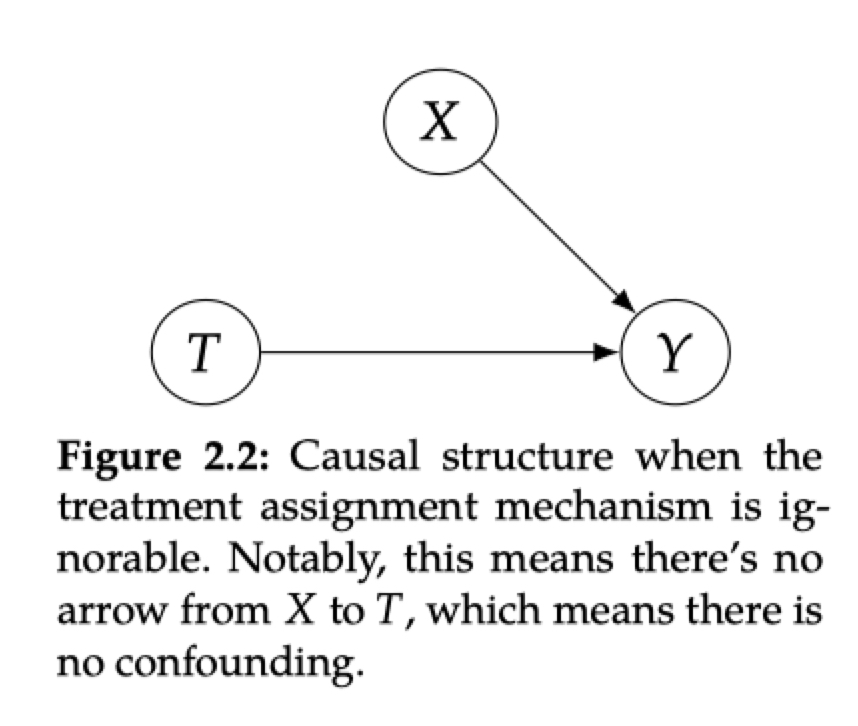
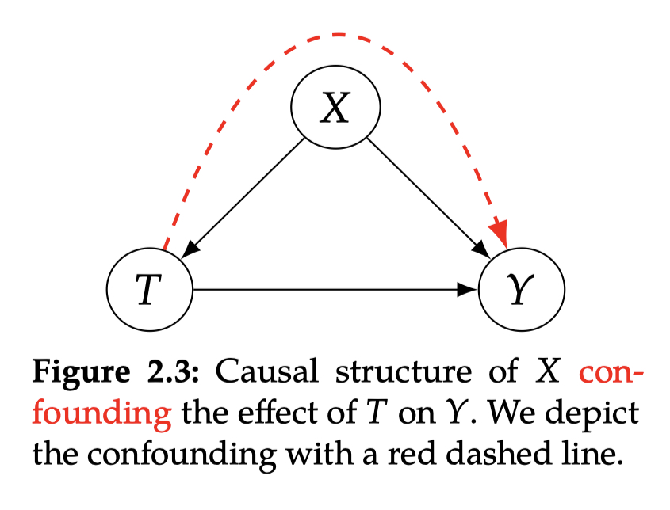
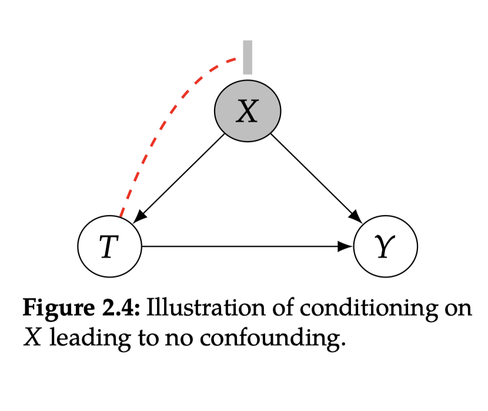

2 Potential Outcomes¶
2.1 Potential Outcomes and Individual Treatment Effects¶
Potential Outcome¶
表示如果采用treatment T，输出将会是什么，用\(Y(t)\)表示
不是实际观察到的输出\(Y\)
2.2 The Fundamental Problem of Causal Inference¶
Fundamental Problem of Causal Inference¶
因为无法同时观测到\(Y_i(1)\)和\(Y_i(0)\)，因此无法观测到causal effect \(Y_i(1)-Y_i(0)\)
可以通过potential outcome计算，没有观测到的potential outcome称作反事实，反事实和事实是相对的，只有当一个输出被观测到后，才能决定其为事实，其他为反事实
2.3 Getting Around the Fundamental Problem¶
{kind=link}
2.3.2 Ignorability and Exchangeability¶
如何让associational difference等于ATE？
给予受试者随机的treatment，去除受试者对treatment选择的影响
{kind=link}
Assumption 2.1 (Ignorability / Exchangeability)
这个假设是因果推断的关键，可以将ATE转换为associational difference：
另一个视角是可互换性，即交换treatment和control组的样本，观察的输出是一样的，
意味着
Definition 2.1 (Identifiability)
A causal quantity ( \(e.g.\ \mathbb{E}[Y(t)]\)) is identifiable if we can compute it from a purely statistical quantity (\(e.g.\ \mathbb{E}[Y|t]\)).
2.3.3 Conditional Exchangeability and Unconfoundedness¶
Assumption 2.2 (Conditional Exchangeability / Unconfoundedness)
\(T\)和\(Y\)之间的非因果关联是通过\(T \leftarrow X \rightarrow Y\)传递的，在图2.3中用红色点线表示。
{kind=link}
当以\(X\)作为条件时，就不存在非因果关联了，如图2.4所示，称之为conditional exchangeability。
{kind=link}
有了conditional exchangeability的假设，可以得到\(X\)级别上的causal effect，
在conditional exchangeability的假设下，遍历\(X\)可以到边际效应，
Theorem 2.1 (Adjustment Formula)
Given the assumptions of unconfoundedness, positivity, consistency, and no interference, we can identify the average treatment effect: $\(\mathbb{E}[Y(1) − Y(0)] = \mathbb{E}_X[\mathbb{E}[Y|T=1,X]-\mathbb{E}[Y|T=0,X]]\)$
2.3.4 Positivity/Overlap and Extrapolation¶
Assumption 2.3 (Positivity / Overlap / Common Support)
For all values of covariates \(x\) present in the population of interest (i.e. \(x\) such that \(P(X=x)>0\)),
positivity/overlap/common support¶
用Bayes拆解后，分母中不能为0
如果数据中的一个子集都是treatment或者control，那么就无法估计其causal effect。
The Positivity-Unconfoundedness Tradeoff¶
condition更多的covariates，会增加满足unconfoundedness的几率，但同时会增加违背positivity的可能性。
Extrapolation¶
违背positivity假设会导致更严重地依赖模型，且往往得到比较差的表现。许多因果预估模型用数据\((t,x,y)\)训练模型，强制模型在\(P(T=1,X=x)=0\)和\(P(T=0,X=x)=0\)的地方推断，替代adjustment formula(Theorem 2.1)中的条件期望。
2.3.5 No interference, Consistency, and SUTVA¶
Assumption 2.4 (No Interference)
即输出不受其他人的treatment影响。但这个假设很容易打破，例如，如果treatment是“养狗”，输出是我的快乐程度，那么很容易受朋友是否养狗的影响，因为我们会一起遛狗。
Assumption 2.5 (Consistency)
If the treatment is \(T\), then the observed outcome \(Y\) is the potential outcome under treatment \(T\). Formally,
We could write this equivalently as follow:¶
观察到的treatment 为\(T\)的数据的输出\(Y\)即为treatment \(T\)的potential outcome。
反例：如果treatment被定义为养狗和不养狗，而养一只puppy会让我开心，因为需要充满活力的朋友，但是如果养一只年老的、没有活力的狗，就不会开心。
所以consistency包含了在一个treatment下没有多种版本的假设。
SUTVA(stable unit-treatment value assumption)¶
个体\(i\)的输出是个体\(i\)的treatment的一个简单函数。
SUTVA是一致性和无干预的组合。
{kind=link}
2.4 Fancy Statistics Terminology Defancified¶
estimand：希望预估的量，例如\(\mathbb{E}_X[\mathbb{E}[Y|T=1,X]-\mathbb{E}[Y|T=0,X]]\)
estimate：estimand的近似，从数据中得到
estimation：用数据和estimand得到estimate的过程
model-assisted estimators：借助机器学习模型进行预估
{kind=link}
2.5 A Complete Example with Estimation¶
"""
Estimating the causal effect of sodium on blood pressure in a simulated example
adapted from Luque-Fernandez et al. (2018):
https://academic.oup.com/ije/article/48/2/640/5248195
"""
import numpy as np
import pandas as pd
from sklearn.linear_model import LinearRegression
def generate_data(n=1000, seed=0, beta1=1.05, alpha1=0.4, alpha2=0.3, binary_treatment=True, binary_cutoff=3.5):
np.random.seed(seed)
age = np.random.normal(65, 5, n)
sodium = age / 18 + np.random.normal(size=n)
if binary_treatment:
if binary_cutoff is None:
binary_cutoff = sodium.mean()
sodium = (sodium > binary_cutoff).astype(int)
blood_pressure = beta1 * sodium + 2 * age + np.random.normal(size=n)
proteinuria = alpha1 * sodium + alpha2 * blood_pressure + np.random.normal(size=n)
hypertension = (blood_pressure >= 140).astype(int) # not used, but could be used for binary outcomes
return pd.DataFrame({'blood_pressure': blood_pressure, 'sodium': sodium,
'age': age, 'proteinuria': proteinuria})
def estimate_causal_effect(Xt, y, model=LinearRegression(), treatment_idx=0, regression_coef=False):
model.fit(Xt, y)
if regression_coef:
return model.coef_[treatment_idx]
else:
Xt1 = pd.DataFrame.copy(Xt)
Xt1[Xt.columns[treatment_idx]] = 1
Xt0 = pd.DataFrame.copy(Xt)
Xt0[Xt.columns[treatment_idx]] = 0
return (model.predict(Xt1) - model.predict(Xt0)).mean()
binary_t_df = generate_data(beta1=1.05, alpha1=.4, alpha2=.3, binary_treatment=True, n=10000000)
continuous_t_df = generate_data(beta1=1.05, alpha1=.4, alpha2=.3, binary_treatment=False, n=10000000)
ate_est_naive = None
ate_est_adjust_all = None
ate_est_adjust_age = None
for df, name in zip([binary_t_df, continuous_t_df],
['Binary Treatment Data', 'Continuous Treatment Data']):
print()
print('### {} ###'.format(name))
print()
# Adjustment formula estimates
ate_est_naive = estimate_causal_effect(df[['sodium']], df['blood_pressure'], treatment_idx=0)
ate_est_adjust_all = estimate_causal_effect(df[['sodium', 'age', 'proteinuria']],
df['blood_pressure'], treatment_idx=0)
ate_est_adjust_age = estimate_causal_effect(df[['sodium', 'age']], df['blood_pressure'])
print('# Adjustment Formula Estimates #')
print('Naive ATE estimate:\t\t\t\t\t\t\t', ate_est_naive)
print('ATE estimate adjusting for all covariates:\t', ate_est_adjust_all)
print('ATE estimate adjusting for age:\t\t\t\t', ate_est_adjust_age)
print()
# Linear regression coefficient estimates
ate_est_naive = estimate_causal_effect(df[['sodium']], df['blood_pressure'], treatment_idx=0,
regression_coef=True)
ate_est_adjust_all = estimate_causal_effect(df[['sodium', 'age', 'proteinuria']],
df['blood_pressure'], treatment_idx=0,
regression_coef=True)
ate_est_adjust_age = estimate_causal_effect(df[['sodium', 'age']], df['blood_pressure'],
regression_coef=True)
print('# Regression Coefficient Estimates #')
print('Naive ATE estimate:\t\t\t\t\t\t\t', ate_est_naive)
print('ATE estimate adjusting for all covariates:\t', ate_est_adjust_all)
print('ATE estimate adjusting for age:\t\t\t\t', ate_est_adjust_age)
print()
### Binary Treatment Data ###
# Adjustment Formula Estimates #
Naive ATE estimate: 5.328501680864975
ATE estimate adjusting for all covariates: 0.8537946431496021
ATE estimate adjusting for age: 1.0502124539714488
# Regression Coefficient Estimates #
Naive ATE estimate: 5.328501680864978
ATE estimate adjusting for all covariates: 0.8537946431495851
ATE estimate adjusting for age: 1.0502124539714823
### Continuous Treatment Data ###
# Adjustment Formula Estimates #
Naive ATE estimate: 3.628378195978172
ATE estimate adjusting for all covariates: 0.8532920319407821
ATE estimate adjusting for age: 1.0497716562238169
# Regression Coefficient Estimates #
Naive ATE estimate: 3.6283781959780943
ATE estimate adjusting for all covariates: 0.8532920319407795
ATE estimate adjusting for age: 1.0497716562238382